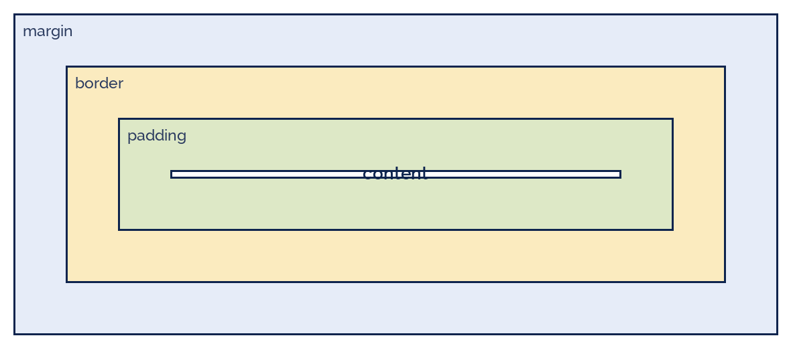

blandinejoannic
blandinejoannic
Good morning!
Nur das Schöne wird die Welt retten!
Fjodor Dostojewski
Nicht verzagen, Doc Alvers fragen!
Informatik — FOS 12
CSS
Statische Webseiten II: Inhalt und Layout sauber trennen
Nicht verzagen, Doc Alvers fragen!
Kapitel 01
Trennung
HTML sagt was, CSS sagt wie
Nicht verzagen, Doc Alvers fragen!
Warum Gestaltung nicht ins HTML gehört
Ein Stylesheet gestaltet alle Seiten — eine Änderung, überall sichtbar
Der Quelltext bleibt lesbar: Struktur hier, Aussehen dort
Dieselbe Seite kann anders aussehen je nach Gerät — Handy, Bildschirm, Druck
Barrierefreiheit: wer eine eigene Darstellung braucht, ersetzt einfach das CSS
Fachwort: Separation of Concerns — jedes Werkzeug für seine Aufgabe
Nicht verzagen, Doc Alvers fragen!
Drei Wege, CSS einzubinden
| Weg | Schreibweise | Bewertung |
|---|---|---|
| inline | <p style="color: red"> | nur im Notfall — Gestaltung klebt am Inhalt |
| intern | <style> … </style> im head | für eine einzelne Testseite |
| extern | <link rel="stylesheet" href="stil.css"> | so machen wir es — eine Datei für alles |
Im Projekt gilt: eine Datei stil.css, in jeder Seite verlinkt
Das ist auch die Antwort auf „warum sieht Seite 3 anders aus?“ — sie tut es dann nämlich nicht
Nicht verzagen, Doc Alvers fragen!
Kapitel 02
Selektoren
Wen soll die Regel treffen?
Nicht verzagen, Doc Alvers fragen!
Der Aufbau einer Regel
/* Selektor { Eigenschaft: Wert; } */
h1 {
color: #0e244e;
font-size: 2rem;
}
.karte {
background: #ffffff;
border: 1px solid #b0c4e2;
padding: 16px;
}
nav a:hover {
color: #b02418;
}Nicht verzagen, Doc Alvers fragen!
Die wichtigsten Selektoren
| Selektor | trifft | im HTML |
|---|---|---|
| p | alle Absätze | <p>…</p> |
| .karte | alles mit dieser Klasse | <div class="karte"> |
| #kopf | das eine Element mit dieser id | <header id="kopf"> |
| nav a | alle Links innerhalb der Navigation | <nav><a>…</a></nav> |
| a:hover | Link, während die Maus darauf liegt | — |
| h1, h2 | beide zugleich | — |
class darf beliebig oft vorkommen, id genau einmal pro Seite
Faustregel im Projekt: Klassen benutzen, ids nur für Sprungziele
Nicht verzagen, Doc Alvers fragen!
Wenn zwei Regeln streiten: die Kaskade
C in CSS heißt Cascading — es gibt eine feste Rangfolge
Spezifität: id schlägt Klasse, Klasse schlägt Element (100 : 10 : 1)
Bei gleicher Spezifität gewinnt die später notierte Regel
Eigenschaften wie Schriftart und Farbe vererben sich an die Kindelemente
!important löst jeden Streit — und schafft beim nächsten Mal einen neuen. Finger weg
Nicht verzagen, Doc Alvers fragen!
Kapitel 03
Das Box-Modell
Jedes Element ist ein Kasten
Nicht verzagen, Doc Alvers fragen!
Vier Ringe um jeden Inhalt
content — der Inhalt selbst, Text oder Bild
padding — Innenabstand, innerhalb des Rahmens, mit Hintergrundfarbe
border — der Rahmen
margin — Außenabstand zum Nachbarn, immer durchsichtig
Mit box-sizing: border-box zählt width die ganze Kiste

Nicht verzagen, Doc Alvers fragen!
Farben, Schrift, Abstände
* { box-sizing: border-box; }
body {
margin: 0;
font-family: 'Outfit', Arial, sans-serif;
line-height: 1.6;
color: #2c3c60;
background: #f4f7fc;
}
h1 { font-family: 'Orbitron', sans-serif; letter-spacing: 0.04em; }
img { max-width: 100%; height: auto; }Nicht verzagen, Doc Alvers fragen!
Einheiten und Farben
| Angabe | bedeutet | wofür |
|---|---|---|
| px | feste Bildpunkte | Rahmen, feine Abstände |
| rem | Vielfaches der Grundschriftgröße | Schrift und Abstände — skaliert mit |
| % | Anteil des Elternelements | Breiten im Layout |
| #0e244e | Farbe als Hexcode (RGB) | unsere Palette |
| rgb(245,194,66) | Farbe als Zahlentripel | gleichwertig, besser lesbar |
Legt eure Farbpalette einmal fest — höchstens drei Farben plus Grau
Mindestens 4,5 : 1 Kontrast zwischen Text und Hintergrund, sonst ist es nicht barrierefrei
Nicht verzagen, Doc Alvers fragen!
Kapitel 04
Layout
Nebeneinander — und auf dem Handy untereinander
Nicht verzagen, Doc Alvers fragen!
Flexbox: die Navigation und die Kartenreihe
nav {
display: flex;
gap: 24px;
padding: 12px 20px;
background: #0e244e;
}
.karten {
display: flex;
flex-wrap: wrap; /* umbrechen statt quetschen */
gap: 20px;
}
.karte { flex: 1 1 280px; } /* waechst, schrumpft, mind. 280px */Nicht verzagen, Doc Alvers fragen!
Responsiv: eine Regel für kleine Bildschirme
@media (max-width: 700px) {
nav {
flex-direction: column; /* Links untereinander */
gap: 8px;
}
h1 {
font-size: 1.5rem;
}
}
/* Testen: Entwicklertools (F12), Geraeteansicht einschalten */Nicht verzagen, Doc Alvers fragen!
Gestaltungsregeln, die immer gelten
Wenige Schriften: höchstens zwei — eine für Überschriften, eine für Fließtext
Wenige Farben: eine Hauptfarbe, eine Signalfarbe, ein Grau — mehr wirkt unruhig
Luft lassen: großzügige Abstände wirken hochwertiger als volle Seiten
Ausrichtung: alles an einer gemeinsamen Kante, keine zufälligen Einrückungen
Konsistenz: gleiche Dinge sehen gleich aus — auf jeder Seite
Zuerst schmal denken: was auf dem Handy funktioniert, geht auf dem Bildschirm sowieso
Nicht verzagen, Doc Alvers fragen!
Fun Facts: CSS
Håkon Wium Lie schlug CSS 1994 vor — im selben Haus wie das Web, am CERN
Vor CSS gestaltete man mit <font>-Tags und unsichtbaren Tabellen — Seiten waren unwartbar
Die Zen Garden-Galerie zeigte 2003, wie dasselbe HTML mit anderem CSS völlig anders aussieht
Das Zentrieren eines Kastens war jahrelang ein Running Gag — mit Flexbox sind es heute zwei Zeilen
Dark Mode ist in CSS eine einzige Medienabfrage: prefers-color-scheme
Nicht verzagen, Doc Alvers fragen!
Eure Aufgabe: dem Projekt ein Gesicht geben
Legt stil.css an und verlinkt sie in allen Seiten — kein style-Attribut mehr im HTML
Definiert Farbpalette und zwei Schriften; schreibt die Hexcodes ins Projekttagebuch
Gestaltet Navigation und Karten mit Flexbox
Ergänzt eine Medienabfrage für max-width: 700px und testet mit F12 in der Geräteansicht
Prüft den Kontrast eures Textes und haltet das Ergebnis fest
Nicht verzagen, Doc Alvers fragen!